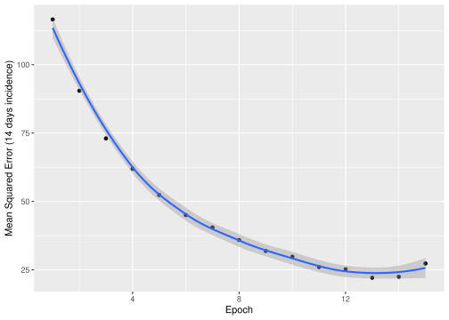
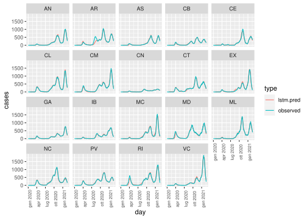
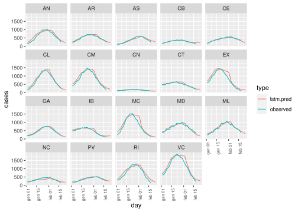

3 LSTM Estimation
LSTM models are a special instance of recurrent neural networks, see https://en.wikipedia.org/wiki/Long_short-term_memory.
3.1 Model train
est.lstm=function(dat){
unlink("dlio", recursive = TRUE)
dir.create("dlio")
write.table(dat[,-1],file="dlio/civinput.csv",
sep=",",row.names = FALSE)
py_set_seed(17)
py_run_file("dl.py") # Here is the LSTM model used
}
est.lstm(cvirus)max_delay=length(list.files(path = "dlio",pattern = "civout"))
collect.lstmoutout=function(datobs){
allres=allerror=allres.bayes=NULL
for(i in 1:max_delay){
preds <- read.csv(paste("dlio/civout",i,".csv",sep=""),sep=",")[-1]
preds[preds<0]=0
dd=(datobs$day)[(nrow(datobs)-nrow(preds)+1):nrow(datobs)]
preds$day=dd+i-1
preds$delay=i
preds$type="lstm.pred"
mm=match(preds$day,datobs$day)
error=datobs[mm,-1]-preds[,1:19]
error$delay=i
error$day=datobs$day[mm]
allres.bayes=rbind(allres.bayes,cbind(preds,datobs[mm,]))
allres=rbind(allres,preds)
allerror=rbind(allerror,error)
}
allres=rbind(allres,data.frame(datobs,type="observed",delay=0))
allres=melt(allres,id.vars=c("day","delay","type"),
variable.name = "region",value.name = "cases")
allerror=melt(allerror,id.vars=c("day","delay"),
variable.name = "region",value.name = "error")
return(list(allres.bayes,allres,allerror))
}
tt=collect.lstmoutout(cvirus)
allres=tt[[2]]
allerror=tt[[3]]
allres.bayes=tt[[1]]The model is learning from the data because the prediction error decreases.
history=read.csv("dlio/history.csv")
history=history*sd(unlist(cvirus[,-1]))
p=ggplot(history,aes(x=1:nrow(history),y=val_loss))+
geom_point()+geom_smooth()+xlab("Epoch")+
ylab("Mean Squared Error (14 days incidence)")
p## `geom_smooth()` using method = 'loess' and formula 'y ~ x'
## `geom_smooth()` using method = 'loess' and formula 'y ~ x'## svg
## 2These are the errors depending on how many days before was made the prediction (delay) and the region (some region is more easy to be predicted than others):
p=ggplot(allerror,aes(x=factor(delay),y=error))+
facet_wrap(. ~ region)+geom_violin()
pdf(file="../sort/fig/errors.pdf")
p
dev.off()## svg
## 2There are the LSTM prediction (prior means):
p1=ggplot(subset(allres,(delay%in%c(0,1))),
aes(x=day,y=cases,color=type))+facet_wrap(. ~ region)+geom_line()+
theme(axis.text.x = element_text(angle = 90,size=rel(0.8)))
pmax=ggplot(subset(allres,(delay%in%c(0,max_delay))&(day>as.Date("2021-01-01"))),aes(x=day,y=cases,color=type))+
facet_wrap(. ~ region)+geom_line()+
theme(axis.text.x = element_text(angle = 90,size=rel(0.8)))
p1

## svg
## 2## svg
## 2Such output contains a guess of the process filtration \(\mathcal{F_{t-1}}\) in \(P\).